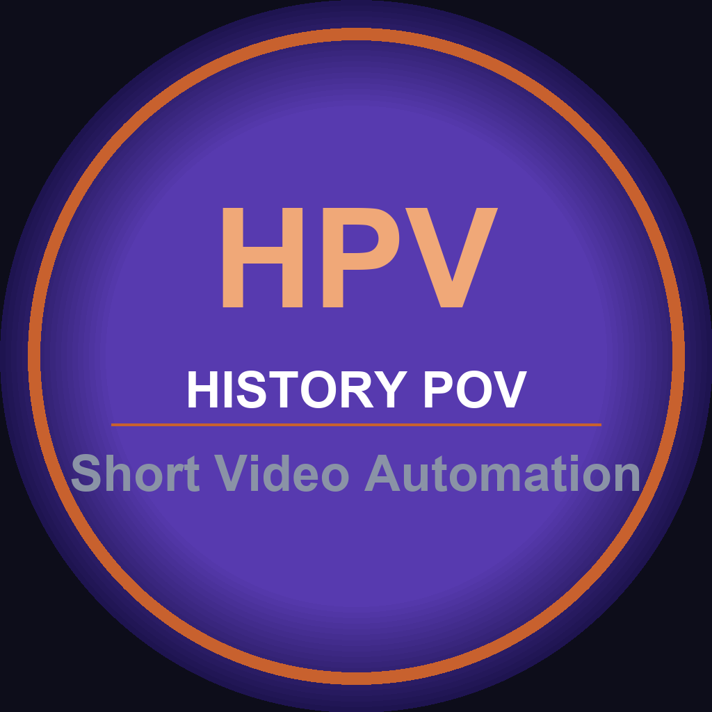

Please read these Terms of Service ("Terms") carefully before using the history-pov application ("the App", "the Service"). By accessing or using the Service, you agree to be bound by these Terms. If you do not agree to these Terms, do not use the Service.
history-pov is an automated content creation and publishing tool that generates historical point-of-view short-form videos and publishes them to third-party platforms on behalf of authorized users. The Service uses AI-generated scripts, images, and voiceovers to produce short video content.
You must be at least 18 years of age to use this Service. By using the Service, you represent and warrant that you meet this requirement and that you have the legal capacity to enter into these Terms.
The Service requires you to authorize access to your third-party platform accounts (e.g., social media platforms) via OAuth authentication. You are solely responsible for maintaining the confidentiality of your credentials and for all activities that occur under your account. You agree to notify us immediately of any unauthorized use of your account.
You agree not to use the Service to:
• Publish content that violates any applicable laws or regulations;
• Infringe upon any intellectual property rights of third parties;
• Publish false, misleading, or defamatory content;
• Violate the terms of service of any third-party platform to which content is published;
• Attempt to gain unauthorized access to any systems or networks;
You retain ownership of content published through the Service. You are solely responsible for ensuring that all content published through the Service complies with applicable laws, regulations, and the terms of service of third-party platforms. We do not review or moderate content before it is published.
The Service integrates with third-party platforms through their official APIs. Your use of those platforms is governed by their respective terms of service. We are not responsible for changes to or actions taken by any third-party platform.
All rights, title, and interest in and to the Service, including all intellectual property rights, are and will remain the exclusive property of history-pov and its licensors. You may not copy, modify, distribute, sell, or lease any part of the Service without our prior written consent.
THE SERVICE IS PROVIDED "AS IS" AND "AS AVAILABLE" WITHOUT WARRANTIES OF ANY KIND, EITHER EXPRESS OR IMPLIED, INCLUDING BUT NOT LIMITED TO WARRANTIES OF MERCHANTABILITY, FITNESS FOR A PARTICULAR PURPOSE, AND NON-INFRINGEMENT. WE DO NOT WARRANT THAT THE SERVICE WILL BE UNINTERRUPTED, ERROR-FREE, OR FREE OF VIRUSES OR OTHER HARMFUL COMPONENTS.
TO THE MAXIMUM EXTENT PERMITTED BY APPLICABLE LAW, IN NO EVENT SHALL HISTORY-POV BE LIABLE FOR ANY INDIRECT, INCIDENTAL, SPECIAL, CONSEQUENTIAL, OR PUNITIVE DAMAGES, INCLUDING BUT NOT LIMITED TO LOSS OF PROFITS, DATA, OR GOODWILL, ARISING OUT OF OR IN CONNECTION WITH YOUR USE OF THE SERVICE.
You agree to indemnify, defend, and hold harmless history-pov and its affiliates, officers, agents, and employees from and against any claims, liabilities, damages, losses, and expenses arising out of your use of the Service or your violation of these Terms.
We reserve the right to suspend or terminate your access to the Service at any time, with or without cause, and with or without notice. Upon termination, your right to use the Service will immediately cease.
We reserve the right to modify these Terms at any time. We will notify users of material changes by updating the "Last Updated" date. Your continued use of the Service after any such changes constitutes your acceptance of the new Terms.
These Terms shall be governed by and construed in accordance with the laws of Japan, without regard to its conflict of law provisions.
If you have any questions about these Terms, please contact us at: ucst3260@gmail.com